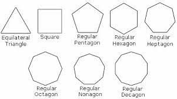

A polygon is a plane shape with three or more straight sides. Triangles are Polygons with three sides and quadrilaterals are Polygons with four sides. Other Polygons can also be named according to the number of sides they may have. Make sure you know the names of these Polygons. e.g:
A polygon with all its sides and all its angles equal is called a regular polygon.
To find the interior angles you can add a line to the out side and find the exterior angle and you should have this as N is the amount of sides so (N-2)x180 would be the interir angles and the exterior angles must always have a value of 360°